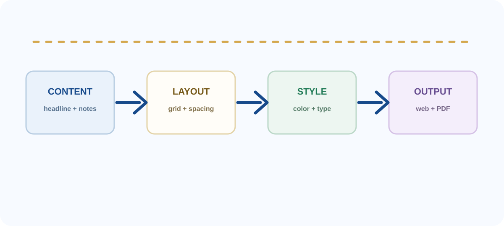
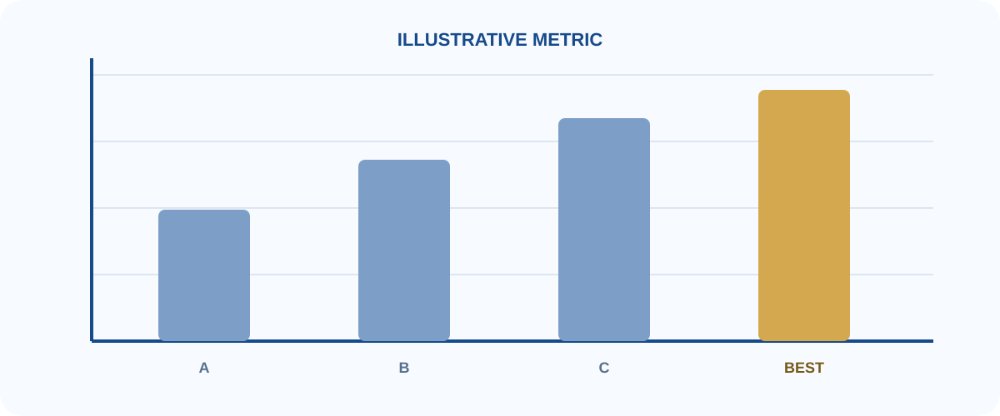
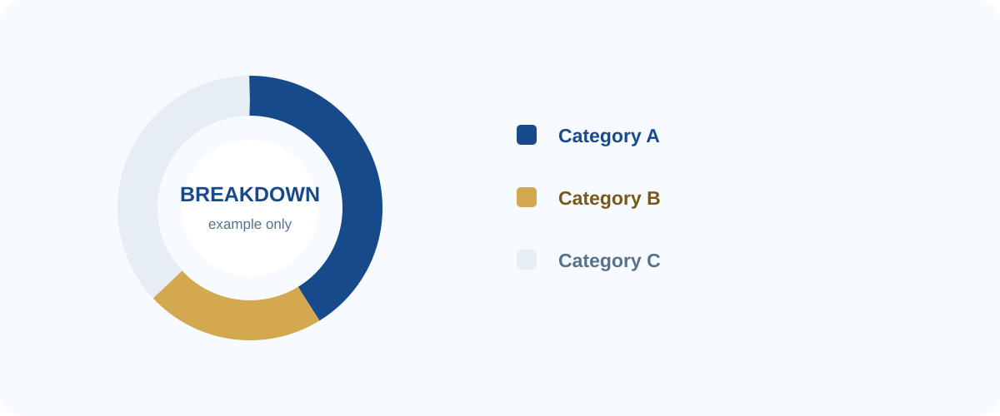
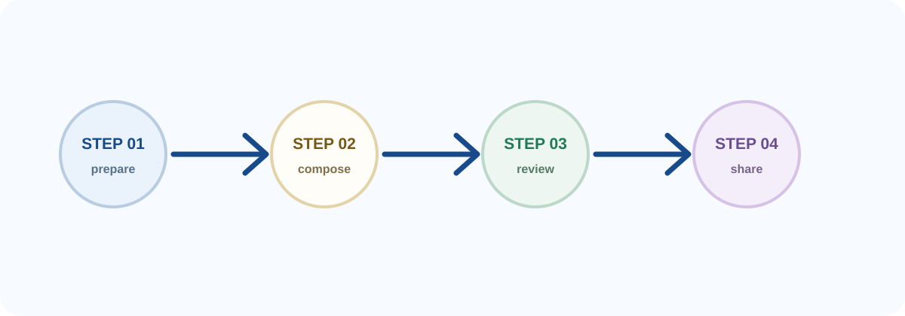
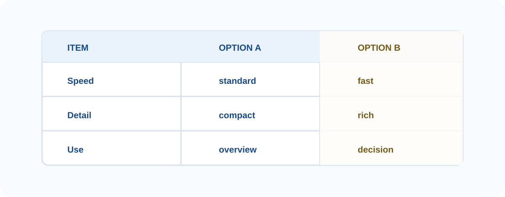

<div class="slide-shell cover-shell"> <div class="cover-brand-row" aria-label="Zhejiang University logo"> <img class="cover-brand-zju-caption" src="assets/zju-logo-with-caption.png" alt="Zhejiang University logo" /> </div> <div class="cover-main"> <div class="cover-kicker">浙江大学 · Reveal-md Template</div> <h1>标题占位符<br />与内容容器示例</h1> <div class="cover-accent"></div> <div class="cover-subtitle">用一页说明你的主题、目的或结论</div> <div class="cover-meta">汇报人：姓名占位符</div> <div class="cover-meta">学院 / 方向：信息占位符</div> <div class="cover-meta">日期：YYYY 年 MM 月 DD 日</div> </div> </div> <!--s--> <div class="slide-shell page-shell directory-shell"> <h2 class="content-title">目录</h2> <div class="agenda-grid"> <div class="agenda-num">01</div> <div class="agenda-text">封面与基础信息</div> <div class="agenda-num">02</div> <div class="agenda-text">卡片、图表与图片容器</div> <div class="agenda-num">03</div> <div class="agenda-text">流程、对比与结论容器</div> </div> </div> <!--s--> <div class="slide-shell page-shell section-shell"> <div class="section-topline">01 基础页面 · Basic Layout</div> <div class="section-middle"> <div> <div class="section-code">基础页面容器</div> </div> </div> </div> <!--v--> <div class="slide-shell page-shell"> <h2 class="content-title">1.1 个人信息容器示例</h2> <div class="profile-layout"> <div class="portrait-card"> <img class="portrait-photo" src="assets/portrait-placeholder.svg" alt="Abstract profile placeholder" /> <div class="portrait-name">姓名占位符</div> <div class="portrait-role">浙江大学 · 学院占位符<br />专业 / 方向占位符</div> </div> <div class="profile-main"> <div class="metric-grid"> <div class="metric-card"><div class="metric-value">01</div><div class="metric-label">数据标签</div></div> <div class="metric-card"><div class="metric-value">02</div><div class="metric-label">数据标签</div></div> <div class="metric-card"><div class="metric-value">03</div><div class="metric-label">数据标签</div></div> </div> <div class="profile-section"> <div class="profile-section-title">要点列表</div> <ul class="course-list"> <li class="course-pill">示例标签一</li> <li class="course-pill">示例标签二</li> <li class="course-pill">示例标签三</li> <li class="course-pill">示例标签四</li> </ul> </div> <div class="profile-section"> <div class="profile-section-title">补充信息</div> <ul class="award-list"> <li class="award-pill">替换成经历、荣誉或关键词</li> <li class="award-pill">每条内容保持简短清晰</li> <li class="award-pill">不需要的条目可以删除</li> </ul> </div> </div> </div> </div> <!--v--> <div class="slide-shell page-shell"> <h2 class="content-title">1.2 双栏卡片容器</h2> <div class="research-header"> <div class="research-header-main">模块标题占位符</div> <div class="research-header-meta">副标题 / 时间 / 标签</div> </div> <div class="project-grid"> <div class="project-card blue"> <div class="project-title">内容模块 A</div> <div class="project-question">用一句话说明这个模块要解决的问题。</div> <div class="project-line"><b>重点：</b>填写三到五个关键词。</div> <div class="project-line"><b>说明：</b>补充背景、方法或结果。</div> <div class="project-metrics"><span>标签 A</span><span>标签 B</span><span>标签 C</span></div> </div> <div class="project-card gold"> <div class="project-title">内容模块 B</div> <div class="project-question">用一句话描述另一个并列模块。</div> <div class="project-line"><b>输入：</b>信息或资源占位符。</div> <div class="project-line"><b>输出：</b>结论或交付物占位符。</div> <div class="project-metrics gold"><span>状态</span><span>时间</span></div> </div> </div> <div class="research-focus-grid"> <div class="focus-card"><div class="focus-name">关键词 A</div><div class="focus-note">一句简短解释，说明它为什么重要。</div></div> <div class="focus-card"><div class="focus-name">关键词 B</div><div class="focus-note">一句简短解释，说明它如何被使用。</div></div> <div class="focus-card"><div class="focus-name">关键词 C</div><div class="focus-note">一句简短解释，说明它带来的结果。</div></div> </div> </div> <!--s--> <div class="slide-shell page-shell section-shell"> <div class="section-topline">02 视觉组件 · Visual Components</div> <div class="section-middle"> <div> <div class="section-code">图片与图表容器</div> </div> </div> </div> <!--v--> <div class="slide-shell page-shell"> <h2 class="content-title">2.1 图片说明容器</h2> <div class="benchmark-layout"> <div class="benchmark-copy"> <div class="benchmark-card"> <h3>图片使用方式</h3> <div class="benchmark-line"><b>文件</b><span>放入 assets 文件夹</span></div> <div class="benchmark-line"><b>引用</b><span>使用相对路径</span></div> <div class="benchmark-line"><b>说明</b><span>为图片补充一句结论</span></div> </div> <div class="benchmark-switch">从图片到结论</div> <div class="benchmark-card accent"> <h3>示例提示</h3> <div class="benchmark-line"><b>避免</b><span>图片占满页面却没有重点</span></div> <div class="benchmark-line"><b>推荐</b><span>保留留白并突出关键信息</span></div> <div class="benchmark-line"><b>配文</b><span>一句话解释读者应看到什么</span></div> </div> </div> <div class="benchmark-visual"> <img src="assets/overview.svg" alt="Abstract overview diagram" /> <div class="benchmark-visual-note">Input → Context → Output</div> </div> </div> <div class="takeaway">每张图都应该服务于一个明确的观点；如果图片不能帮助读者理解，就可以删掉它。</div> </div> <!--v--> <div class="slide-shell page-shell"> <h2 class="content-title">2.2 三列信息容器</h2> <div class="task-grid"> <div class="task-card"> <div class="task-head"><div class="task-name">基础</div><div class="task-number">01</div></div> <div class="task-example">放置一个短例子</div> <div class="task-detail">补充一行上下文</div> <div class="task-goal">说明这一列想表达的核心观点。</div> </div> <div class="task-card"> <div class="task-head"><div class="task-name">重点</div><div class="task-number">02</div></div> <div class="task-example">突出一个关键词</div> <div class="task-detail">用两行文字解释<br />不要堆叠完整段落</div> <div class="task-goal">说明读者应该记住什么。</div> </div> <div class="task-card"> <div class="task-head"><div class="task-name">行动</div><div class="task-number">03</div></div> <div class="task-example">给出下一步</div> <div class="task-detail">说明时间、负责人<br />或预期结果</div> <div class="task-goal">把信息转化成明确的行动。</div> </div> </div> <div class="task-summary"> <span><b>03</b><small>Cards</small></span> <span><b>01</b><small>Key Point</small></span> <span><b>02</b><small>Next Steps</small></span> </div> <div class="task-coverage"> <div><b>标题</b><span>用短标题告诉读者这张卡片的主题</span></div> <div><b>例子</b><span>用一个具体但不敏感的例子支撑观点</span></div> <div><b>结论</b><span>用一句话收束卡片内容</span></div> </div> </div> <!--v--> <div class="slide-shell page-shell"> <h2 class="content-title">2.3 框架图容器</h2> <div class="framework-wrap"> <p></p> </div> <div class="framework-key"> <div class="framework-key-item"><b>① Content</b><br />标题、正文与数据</div> <div class="framework-key-item"><b>② Layout</b><br />网格、间距与层次</div> <div class="framework-key-item"><b>③ Style</b><br />颜色、字体与边框</div> <div class="framework-key-item"><b>④ Output</b><br />在线预览与 PDF</div> </div> </div> <!--v--> <div class="slide-shell page-shell"> <h2 class="content-title">2.4 图表容器</h2> <div class="framework-wrap"> <p></p> </div> <div class="takeaway">图表中的数字仅用于展示排版方式；替换时请同时更新标题、单位、图例和结论。</div> </div> <!--v--> <div class="slide-shell page-shell"> <h2 class="content-title">2.5 分析图容器</h2> <div class="failure-figure-wrap"> <p></p> </div> <div class="failure-note-grid"> <div><b>类别 A</b><span>用一句话解释第一类信息。</span></div> <div><b>类别 B</b><span>用一句话解释第二类信息。</span></div> </div> <div class="takeaway">图表旁边保留两条观察即可，避免让读者在图中自行寻找结论。</div> </div> <!--s--> <div class="slide-shell page-shell section-shell"> <div class="section-topline">03 结构化表达 · Structured Story</div> <div class="section-middle"> <div> <div class="section-code">流程与结论容器</div> </div> </div> </div> <!--v--> <div class="slide-shell page-shell"> <h2 class="content-title">3.1 动机与流程</h2> <div class="motivation-flow"> <div class="motivation-node"><div class="motivation-node-title">背景</div><div>说明为什么需要这个页面。</div></div> <div class="motivation-arrow">→</div> <div class="motivation-node"><div class="motivation-node-title">输入</div><div>列出已有信息或约束。</div></div> <div class="motivation-arrow">→</div> <div class="motivation-node"><div class="motivation-node-title">处理</div><div>说明主要步骤或判断。</div></div> <div class="motivation-arrow">→</div> <div class="motivation-node gold"><div class="motivation-node-title">输出</div><div>给出结论或下一步。</div></div> </div> <div class="motivation-bottom"> <div class="motivation-note"> <div class="case-title">使用提示</div> <div class="motivation-brief-lead">让每个流程节点只承担一个信息任务。</div> <div class="motivation-brief-row"><b>输入</b><span>一句话描述已知信息</span></div> <div class="motivation-brief-row"><b>处理</b><span>一句话描述关键动作</span></div> <div class="motivation-brief-foot"><b>推荐：</b>将复杂过程拆成 3 至 5 个步骤。</div> </div> <div class="research-question"> <div class="question-lead">核心问题</div> <div class="motivation-question-main">读者看完这一页后，应该能够复述哪一句话？</div> <div class="motivation-question-note">把答案写成页面底部的 takeaway。</div> </div> </div> </div> <!--v--> <div class="slide-shell page-shell"> <h2 class="content-title">3.2 流程图容器</h2> <div class="framework-wrap"> <p></p> </div> <div class="data-takeaway">流程图适合描述先后关系；如果节点之间没有顺序，就改用卡片或矩阵。</div> </div> <!--v--> <div class="slide-shell page-shell"> <h2 class="content-title">3.3 对比表容器</h2> <div class="framework-wrap"> <p></p> </div> <div class="takeaway">对比表只保留会影响决策的维度，并用颜色强调推荐选项。</div> </div> <!--v--> <div class="slide-shell page-shell"> <h2 class="content-title">3.4 验证与结论容器</h2> <div class="verify-idea"><b>核心想法</b><span>先提出一个可验证的判断，再用简短证据支持或修正它。</span></div> <div class="verify-hero-layout"> <div class="verify-process"> <div class="verify-section-label"><b>验证流程</b><span></span></div> <div class="verify-train-note">将复杂结论拆成输入、判断和输出三个步骤：</div> <div class="verify-training-flow"> <div class="verify-training-row"> <div class="verify-training-head">Input</div> <div class="verify-training-copy">背景信息与当前问题<br /><b>明确验证对象</b></div> <div class="verify-training-target"><b>Evidence</b><br />列出一条关键证据</div> </div> <div class="verify-training-row gold"> <div class="verify-training-head">Output</div> <div class="verify-training-copy">支持、反对或待确认<br /><b>写出结论</b></div> <div class="verify-training-target"><b>Next</b><br />给出下一步行动</div> </div> </div> </div> <div class="verify-results"> <div class="verify-section-label"><b>结论示例</b><span>Keep it short</span></div> <table class="verify-result-table"> <thead> <tr><th>项目</th><th>示例</th><th>状态</th></tr> </thead> <tbody> <tr><td>判断</td><td>目标清晰</td><td>通过</td></tr> <tr><td>证据</td><td>信息完整</td><td>通过</td></tr> <tr><td>下一步</td><td>补充细节</td><td>待办</td></tr> </tbody> </table> </div> </div> <div class="verify-conclusion">结论占位符：用一句话总结最重要的发现，避免重复整页内容。</div> </div> <!--s--> <div class="slide-shell thanks-shell"> <div class="thanks-main"> <div class="thanks-text">感谢阅读</div> <div class="thanks-qa">Q&A</div> </div> </div>